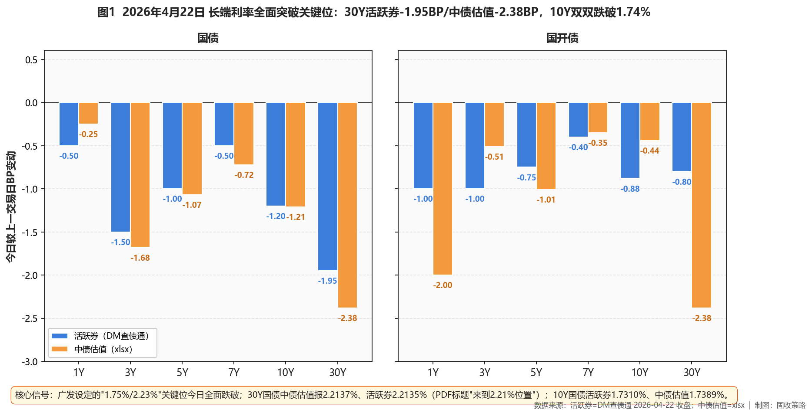
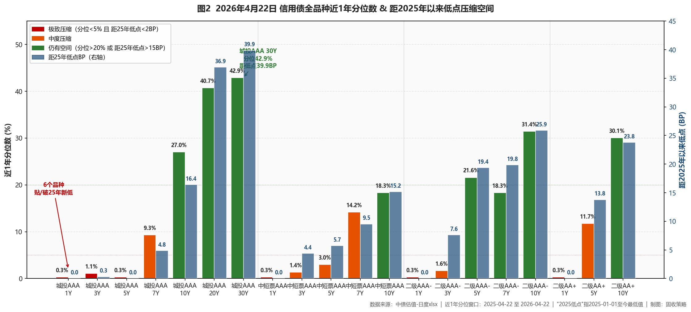

市场定性 长期震荡市 + 长端利率关键位已全面跌破 + 一级抢筹印证配置盘入场——30Y国债活跃券2.2135%/中债估值2.2137%（PDF"来到2.21%位置"、距2.23%下方8.6BP），10Y国债活跃券1.7310%/中债估值1.7389%（距1.75%下方11-20BP）；一级市场10Y国债加权1.6866%显著低于二级估值（配置盘一级抢筹）；二级AAA- 10Y连涨2日领涨信用板块，长端利率已进入"过关突破+惯性下行"阶段、止盈节奏先于行情退潮。
- ✅ 长端信用（继续首选）首选：二级AAA- 10Y（今日-2.16BP、连2日领涨、2日累计-4.48BP、分位31.4%/距低点25.87BP）+ 城投AAA 20/30Y（分位41-43%/距低点36.9-39.9BP）；合计15-25%；30Y加仓节奏继续减半（利率突破日不激进）
- ✅ 7Y凸点+中段二级AAA- 7Y（-1.27BP、分位18.3%/距低点19.84BP）+ 中短票AAA 7Y（-1.17BP、分位14.2%/距低点9.52BP）+ 城投AAA 7Y（-1.17BP、分位9.3%）；5Y二级AAA-（分位21.6%/距低点19.35BP）合计25-30%
- ❌ 规避短端贴底（新增9品种破新低）中短票AAA/AA+ 1Y、中短票AA+ 3/5Y、二级AAA-/AA+ 1Y、城投AAA 1/5Y、城投AA+ 3Y——今日全部破25年新低（距低点=0、分位<1%）；1Y AAA存单1.44%创历史新低——严禁新增、仅到期滚续
- ❌ 止盈长端利率债（加快节奏）10Y活跃券1.7310%/中债估值1.7389%（距1.75%下方11-20BP）；30Y活跃券2.2135%/中债估值2.2137%（距2.23%下方8.6BP）——广发目标位全面跌破、下行斜率加速本身即止盈信号（翻转信号④典型触发特征）；长端利率债分批减至核心底仓下限
- ① 30Y国债2.23%关口 ⚠️已跌破：活跃券2.2135%/中债估值2.2137%（距下方8.6BP）→广发目标位全面跌破+央行合意区间内继续突破，长端利率债加快减仓节奏、30Y超长信用暂停新增
- ② 10Y国债1.75%关口 ⚠️已跌破：活跃券1.7310%（距下方19BP）/中债估值1.7389%（距下方11BP）→下行空间充分透支+配置盘一级抢筹，长端利率债减仓至底仓下限、止盈兑现
- ③ R-DR007利差走阔至 >15BP（R系列22点后EDB入库、4/22实时值待次日校准；4/21为6.74BP）→流动性分层重现、加杠杆窗口关闭，去杠杆至≤105%、减仓中低等级久期
- ④ 10Y中短票AAA-3Y利差跌破25BP（当前43.65BP、较昨日-0.46BP）→中长-中端价差耗尽，止盈10Y中短票、转配5-7Y二永中段
- ⑤ 30Y-10Y城投AAA利差跌破15BP（当前34.98BP、较昨日+0.13BP）→超长期限结构极度平坦、补涨完成，分批减仓30Y超长信用、向10Y以内集中
资金面
央行60亿7天逆回购净投放55亿（利率1.40%）。Wind EDB实测：DR001 1.2181%（+0.11BP）、DR007 1.3202%（-0.69BP）；R系列暂未入库、沿用4/21 R001 1.2853%/R007 1.3945%作为锚点；DR007低于OMO 7.98BP、连续多日宽松格局延续；X-repo盘面银行隔夜1.2%（市场视为央行默许下限）、非银1.34-1.36%。存单方面1Y AAA同业存单1.44%、创历史新低（PDF原话"全国性及主要股份制银行一年期存单在1.44%附近成交、创历史新低"）、3M AAA 1.355%（-1.5BP）。一级市场10Y国债加权中标1.6866%显著低于二级估值1.7389%（低约5BP）——配置盘一级市场抢筹；下周关注4/27 MLF 6000亿续做。
利率债
长端全面突破：广发两大止盈关键位均已跌破——活跃券30Y国债-1.95BP报2.2135%（距2.23%下方8.6BP）、10Y国债-1.20BP报1.7310%（距1.75%下方19BP）、30Y国开-0.80BP、10Y国开-0.88BP报1.8490%；中债估值30Y国债-2.38BP报2.2137%、10Y国债-1.21BP报1.7389%、20Y国债-0.25BP（昨日-4BP补涨降温）。国债期货全线收涨（30Y主连+0.43%报114.180元再创阶段新高）。国债30Y-10Y期限利差47.48BP（压缩1.17BP）。一级市场10Y国债加权1.6866%显著低于二级估值——配置盘一级抢筹对二级构成上行压力；翻转信号①②由"已触发"升级为"充分跌破+下行斜率加速"，长端利率债加快减仓节奏。

图1 利率债长端全面突破关键位（2026-04-22 BP变动）
信用债（核心）
延续"长端跟进领涨、短端继续贴底"结构：🎯 二级AAA- 10Y -2.16BP报2.1938%（连涨2日、2日累计-4.48BP、分位31.4%/距低点25.87BP）、二级AA+ 10Y -2.16BP（分位30.1%/距低点23.76BP）、二级AAA- 7Y -1.27BP（分位18.3%/距低点19.84BP）；中短票AAA 7Y -1.17BP（分位14.2%/距低点9.52BP）、10Y -1.00BP（分位18.3%/距低点15.17BP）；永续AAA- 5Y -0.93BP（分位10.9%/距低点15.41BP）。城投AAA 30Y持平、20Y-0.98BP、15Y-1.10BP、10Y-0.15BP——超长城投在历史低位盘整（补涨动能高位降温）；但城投AAA 5Y今日-1.79BP破25年新低（哑铃结构）。今日新增9个品种破25年新低（中短票AAA/AA+ 1Y、中短票AA+ 3/5Y、二级AAA-/AA+ 1Y、城投AAA 1/5Y、城投AA+ 3Y）+ 1Y AAA存单创历史新低——严禁新增短端。保险：30Y-10Y国债利差47.48BP仍>25BP阈值、但利率突破日按兵不动更合理。

图2 信用债全品种近1年分位数 & 距2025年以来低点压缩空间（含20/30Y长端）
策略矩阵
一、公开市场与资金面
央行今日开展60亿元7天逆回购（利率1.40%），对冲5亿到期、净投放55亿。银行间资金面"依旧非常宽松"——Wind EDB实测：DR001 1.2181%（较4/21 +0.11BP）、DR007 1.3202%（-0.69BP）；R系列暂未入库、沿用4/21 R001 1.2853%/R007 1.3945%作为锚点（EDB通常23:00后完整入库，次日校准）。DR007继续低于7天OMO（1.40%）7.98BP，连续多日宽松格局延续。匿名点击系统（X-repo）盘面上，银行隔夜报价1.2%、供给裕；非银机构质押存单/信用债融入隔夜1.34%-1.36%左右；市场将1.2%的匿名报价视为"央行默许的隔夜回购利率阶段性下限"（PDF交易员评论）。存单方面1Y AAA同业存单1.44%、创历史新低（PDF原话）、3M AAA 1.355%（-1.5BP）。
一级市场认购热度亮眼——财政部国债91/182/10Y加权中标0.9616%/1.0188%/1.6866%，全场倍数4.05/3.55/4.66；值得注意的是，10Y国债加权1.6866%显著低于二级中债估值1.7389%、低约5BP——配置盘在一级市场抢筹、对二级构成上行压力的传导通道形成。农发行3/10Y金融债1.4871%/1.8082%、全场倍数8.39/6；财政部香港2年期155亿人民币国债2/3/5/15Y发行利率1.32%/1.36%/1.50%/2.08%、认购倍数4.6倍。税期走款后资金面依旧宽松；下周关注4/27 MLF 6000亿续做（月内最大事件）。
二、利率债与债市总览
今日利率债最硬的信号是30Y/10Y国债两个广发止盈关键位全面跌破。活跃券端：30Y国债"26附息国债02" -2.30BP报2.2100%（PDF）/ DM -1.95BP报2.2135%（距2.23%下方8.6BP）、10Y国债"26附息国债05" -1.30BP报1.7300%（距1.75%下方20BP）、10Y国开"25国开20" -0.98BP报1.8480%；中债估值曲线口径：30Y国债-2.38BP报2.2137%（距2.23%下方8.6BP）、10Y国债-1.21BP报1.7389%（距1.75%下方11BP）、20Y国债-0.25BP（昨日-4BP补涨后今日降温）、国开30Y-2.38BP报2.3448%。两口径一致提示长端利率已进入"过关突破+惯性下行"新阶段。
曲线形态上，国债30Y-10Y期限利差47.48BP（较昨日压缩1.17BP）、10Y-3Y利差43.58BP；国开曲线整体下行但短端下行幅度更大（国开1Y中债估值-2.00BP）；中债估值10Y国开-国债隐含税率9.15BP（较昨日走阔0.77BP），国开相对国债凸性溢价微幅修复——在长端利率被快速拉下的过程中，国开"过度下行"预期有所退潮。国债期货全线收涨——30Y主连+0.43%报114.180元、再创阶段新高，10Y主连+0.09%、5Y+0.07%、2Y+0.04%。
核心判断：长端利率已从昨日"刚刚触及目标位"切换到今日"已充分跌破"——继续持有即享受惯性下行最后一段收益。但PDF原话"短券收益率下行空间已经比较有限"、卖方交易员也提示"要注意"，加之一级市场10Y国债加权1.6866%已显著低于二级，本行判断下行斜率加速本身即构成止盈信号（翻转信号④的典型触发特征）——长端利率债本日起进一步加快减仓节奏、至核心底仓下限。关注4/25 3月工业企业利润、4/27 MLF续做规模、5月政治局会议三个关键事件节点。
图1 利率债长端全面突破关键位（2026-04-22 BP变动）
三、信用债市场
信用债今日延续"长端跟进利率债领涨、短端继续贴底"的结构，银行二永是连续第二日的亮点：二级AAA- 10Y -2.16BP报2.1938%（昨日-2.32BP、连续2日-2BP以上、两日累计-4.48BP领涨信用板块）、近1年分位31.4%/距2025低点25.87BP；二级AA+ 10Y -2.16BP报2.2212%、分位30.1%/距低点23.76BP；二级AAA- 7Y -1.27BP报2.0912%、分位18.3%/距低点19.84BP。永续AAA- 5Y -0.93BP报1.9804%、分位10.9%/距低点15.41BP，银行永续债5Y仍具吸引力。PDF特别提及"26中行二级资本债01BC"、"26工行二级资本债01BC"、"24农行二级资本债01B"、"26民生银行二级资本债01"收益率均下行1BP左右，与曲线估值印证。
中短票AAA长端延续凸点赔率——7Y -1.17BP报2.0115%、分位14.2%/距低点9.52BP；10Y -1.00BP报2.1475%、分位18.3%/距低点15.17BP；但中短票AAA 5Y -0.54BP、距低点仅5.73BP/分位3.0%，已接近拥挤极值。
【长端城投】今日出现"长端盘整+5Y向下突破"的结构性分化——城投AAA 30Y持平2.5436%（连续两日持平、分位42.9%/距低点39.86BP）、20Y-0.98BP（分位40.7%/距低点36.92BP）、15Y-1.10BP、10Y-0.15BP——超长城投在历史低位进入盘整，印证超长信用补涨动能在高位降温；但城投AAA 5Y今日-1.79BP报1.8387%、破2025年以来新低（距低点=0、分位0.3%）——短端/中短端在宽松资金面+存单创新低驱动下继续向下突破；7Y段-1.17BP、分位9.3%/距低点4.85BP表现尚可。城投整体进入"5Y下探新低、7Y凸点、20-30Y高位盘整"的哑铃结构。
【信用债短端贴底面继续扩大】今日新增破新低品种：中短票AAA 1Y/AA+ 1Y/AA+ 3Y/AA+ 5Y、二级AAA- 1Y、二级AA+ 1Y、城投AAA 1Y/5Y、城投AA+ 3Y——共9个品种破2025年以来新低（距低点=0BP、近1年分位<1%）；1Y AAA同业存单1.44%创历史新低。短中端一致走向极值，流动性垫/票息底仓的加仓窗口彻底关闭、严格限于到期滚续、禁止新增。
【保险视角】30Y-10Y国债期限利差今日47.48BP（较昨日压缩1.17BP、仍显著高于25BP增配阈值），从久期利差角度超长端仍是险资配置窗口；但今日超长端利率下行由利率带动（30Y国债-2.38BP、30Y城投AAA持平）、信用利差被动走阔，建议保险继续逢调整增配、在利率突破日按兵不动（与昨日判断一致、动能维持）。二级资本债在偿二代二期下基础因子优于永续，10Y二级AAA- -2.16BP、5Y二级AAA- -0.60BP均具偿付能力友好属性。
【xlsx实测止盈信号检查】①10Y中短票AAA-3Y利差今日43.65BP（昨日44.11BP、压缩0.46BP），距25BP阈值仍有18.65BP空间；②30Y-10Y城投AAA利差今日34.98BP（昨日34.85BP、变动+0.13BP），距15BP阈值仍有19.98BP空间——信用端两条止盈信号均未触发；但利率端翻转信号①②在昨日已被活跃券触发，今日已成"充分跌破"状态，②升级为"下行斜率加速"（翻转信号④的典型触发模式）——对应长端利率债加快减仓、长端信用加仓节奏减半。
图2 信用债全品种近1年分位数 & 距2025年以来低点压缩空间（含长端20/30Y）